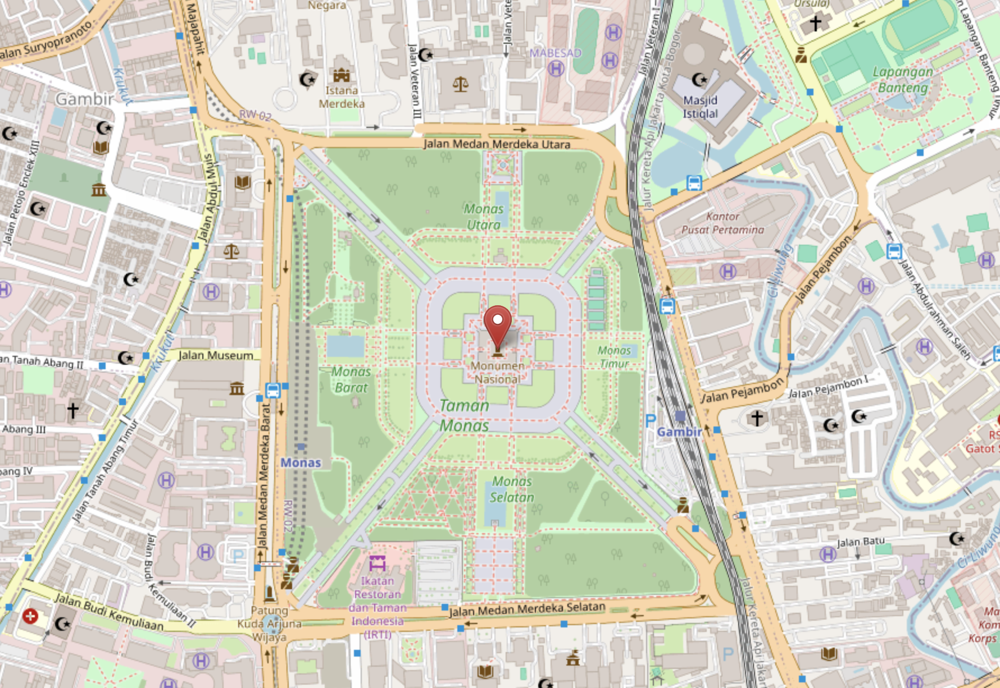
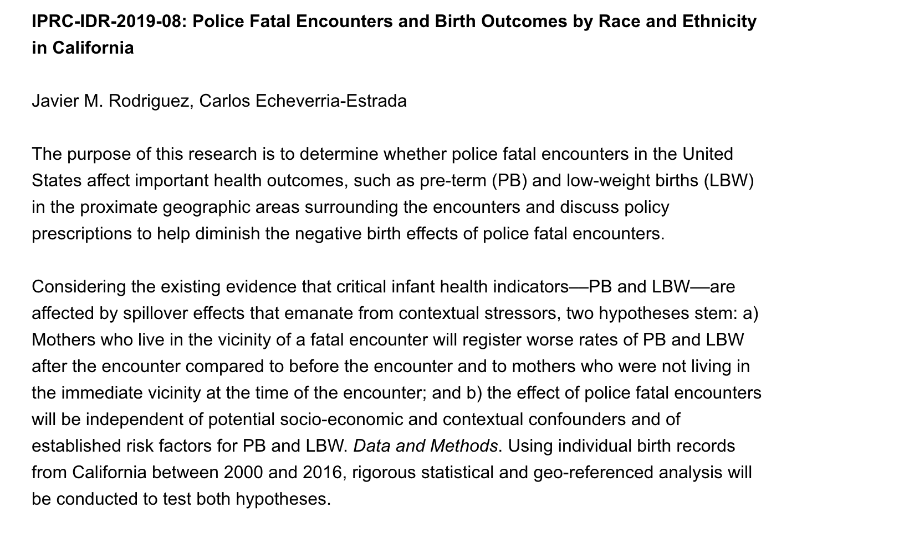
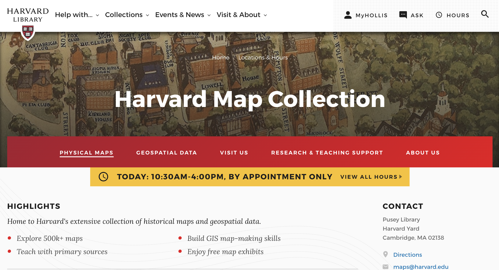

Harvard Maps GIS Services in 4 Stories
Story #1
- A student needed help finding geospatial data and we made them a step-by-step tutorial.

- Here is the tutorial to obtain crowd-sourced OpenStreetMap data developed for the student.
Story #2
- A student was still developing the concept for their mapping project and used their initial Harvard Maps consult to brainstorm and sketch out ideas.
 Map sketch by HKS student Justine Baillart.
Map sketch by HKS student Justine Baillart.
Story #3
- Students make use of GIS resources beyond class projects.


Story #4
- Students take advantage of Map Collection networks and expertise for mixed methods.
- Example of vectorizing and spatial analysis .

Consultations
 The best way to find maps or data is to make an appointment on the Harvard Map Collection website .
Questions
Or, you can follow up with any questions by emailing:
belle_lipton@harvard.edu